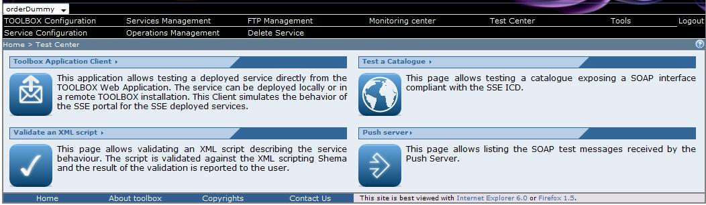

Click on the "Test center" link on the toolbar. The browser should display

Click on the "Test a catalogue" section link.
A catalogue client is displayed in a new window.
 This page can be open also from the Toolbox Application client selecting the following link .
This page can be open also from the Toolbox Application client selecting the following link .
Select the catalogue interface you want to test
A new menu should appear. The menu content depends on the interface you have selected. In the following we report a description of the interface for the CSW-ebRIM-EO_Profile-06-131r6 interface.
In the Protocol Parameters section select the SOAP options
- Catalogue Url: SOAP end point of the catalogue to be accessed.
- SOAP Version: SOAP version to be used to compose the catalogue request.
In the Basic tab set the following parameters
- Collection: enter the collection to be used in the search criteria
- Spatial Coverage: click on SetAOI and draw a rectangle on the map to define the area of interest to be used in the search criteria
- Temporal Coverage. Enter the time window to be used in the search criteria
- From: select a date. The time will be automatically set to 00:00:00
- To: select a date. The time will be automatically set to 23:59:59
- Presentation: select one of the available presentation to modify the ontent of the response message
- Retrieve: define the number of elements to be returned in the response message
- Starting from : define the cursor to allow the pagination of the results
In the Advanced tab select
- Platform:
- Short Name: short name of the platform
- Serial Number: Serial Number of the platform
- Cloud Coverage:
When all the parameters you want to include in the query have been set click on Send Request.
A response slide bar is open and a waiting icon is displayed.

If a successful resposne is received the Response slide bar should now display the results returned by the catalogue. The map should also display the coverage of each result. click on the "+" on the left of the table to apoen a menurelated to the raw selected.
The two icons allows you to:
- get detailed information related to the item selected
- identify the item on the map